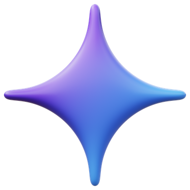
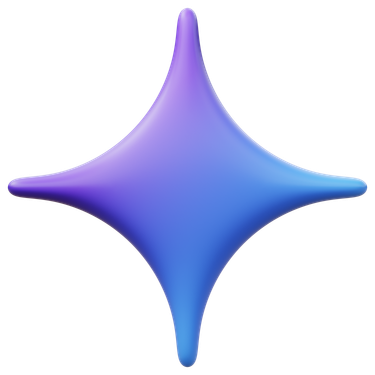

Homelab Backbone
Physical infrastructure anchors long-running services, versioned configs, and isolated containers that move cleanly from build to deploy.
Engineered workflows that keep models accountable: containerized execution, explicit tool boundaries, and orchestration that leaves an audit trail.
 Structured Tools
Structured Tools
Each layer is designed for control, observability, and repeatable deployment.
Physical infrastructure anchors long-running services, versioned configs, and isolated containers that move cleanly from build to deploy.

Tool access is explicit and auditable, keeping AI reasoning separated from execution with predictable, contract-based calls.

Event-driven flows handle routing, retries, and branching logic so automation stays deterministic and observable across services.
Routing keeps workloads fast, safe, and specialized without sacrificing traceability.
Requests are dispatched by task type and latency needs, while guardrails ensure outputs remain consistent and reviewable.
 OpenAI

Gemini
OpenAI

Gemini
 Anthropic
Open-source
Anthropic
Open-source
MCP keeps tool execution structured with explicit contracts, logging, and tightly scoped access for reliable automation.
Context is pulled from curated sources so answers stay factual, scoped, and auditable.

Queries retrieve relevant documents, route them through scoring and filtering, and attach the best context to model prompts. The result is grounded answers that cite known sources, avoid hallucinations, and keep responses aligned to your stack and data boundaries.
This layer pairs with MCP tooling to ensure every retrieval, filter, and response remains observable and repeatable.
Each workflow begins with a trigger and resolves with a logged, controlled outcome.

Triggered moderation, routing, and response generation with structured handoffs between AI and execution layers.
Front-end chat flows normalized through deterministic routing, guardrails, and response logging.
Alerts and summaries generated from system events with retriable workflows and traceable outcomes.
Clear steps, measurable outcomes, and high-signal delivery checkpoints.
Define goals, data sources, and success criteria.
Map workflows, tools, and model routing strategies.
Implement MCP tools, n8n flows, and test integrations.
Deploy, monitor, and iterate with clear logs and metrics.
Let's design an AI system that fits your stack and your goals.
Contact Me